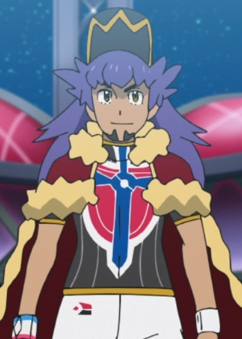
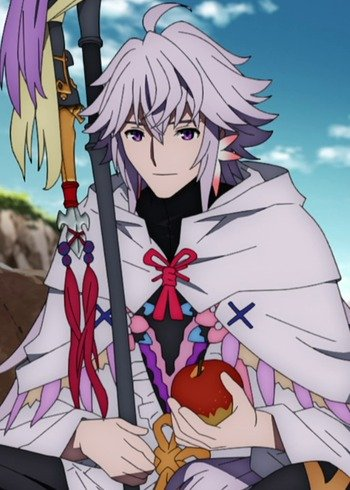
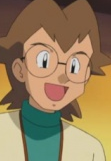

|
Akane Hoshi |
|
Akane Hoshi is a claymore-meister partnered with Clay. He is very reserved, intelligence and sociable. Akane is generally respectful to those he meets. |
 |
Atsumu Matsuyuki |
- Anohana: The Flower We Saw That Day
- Anohana: The Flower We Saw That Day Movie
|
Atsumu Matsuyuki or Yukiatsu is a childhood friend of Jinta, Naruko, Chiriko, Tetsudo, and Menma. He and Chiriko attend the same elite high school. Along with his friends, he is a member of Super Peach Busters. He holds a condesscending and hateful attitude towards Jinta Yadomi because of his crush. He becomes agitated whenever Meiko is mentioned and tries to hide that he is still distraught over her death. He is still trapped by the memory of Meiko(Menma). He secretly has a dark side to him from his affection for Meiko and his inferiority complex from childhood. Despite all of that, he is intelligent and excels in school. |
 |
Griamore |
- The Seven Deadly Sins
- The Seven Deadly Sins OVA
- The Seven Deadly Sins: Signs of Holy War
- The Seven Deadly Sins: Revival of The Commandments
- The Seven Deadly Sins: Wrath of the Gods
|
Griamore is a Holy Knight who comes from a lineage of Holy Knight that have served the knight for years. He is loyal to Veronica Liones and her bodyguard. He is very tall and muscular individual who is at least twice the height of ordinary. |
 |
Harth |
- Recovery of an MMO Junkie
|
Harth is a character that Yuuta created. |
|  |
Leon |
|
Leon is the Champion of the Galar region's Pokemon League. Leon is a strong Trainer and a good sportsman. He is remarkably knowledgeable about the Gigantamaxing phenomenon. |
|  |
Merlin |
- Fate/Apocrypha
- Fate/Grand Order: Absolute Demonic Front - Babylonia
|
Merlin is a Caster-class Servant. His true name is Merlin, the Magus of Flowers. He is a prophet and advisor during the Arthurian Legends. He tends to appear as having a perfectly happy personality, a prefectly happy guy, without a single worry. He is self-aware about the fact that he is foreign body in regards to human society. He is laid-back, lack of the sense of responsibilty. He has a fond of humans and loves humans, mischief, and girls. Merlin is a good man, and wise one. |
 |
Satoshi Isshiki |
- Food Wars!
- Food Wars! OVA
- Food Wars! The Second Plate
- Food Wars! The Second Plate OVA
- Food Wars! The Third Plate
- Food Wars! The Third Plate: Totsuki Train Arc
- Food Wars! The Fourth Plate
|
Satoshi Isshiki is a student at Tootsuki Culinary Academy, a resident of Polar Star Dormitory and the 7th of the Elite Ten Council. He promotes a strong determination for his junior. He is benevolene and slack personality but a serious and cunning opponent. |
 |
Sting Eucliffe |
- Fairy Tail
- Fairy Tail (2014)
- Fairy Tail: Final Season
|
Sting Eucliffe is a mage from the guild Sabertooth. He uses White Dragon Slayer magic. Sting rarely loses his temper. |
|  |
Watt |
- Pokemon Advanced Generations
|
Watt is the assistant to Wattson at the Mauville Gym. Watt is an overly anxious and concerned individual, mainly because of Wattson's jokes. He and Wattson are a fanatasic team. |
 |
Yuta Sakurai |
- Recovery of an MMO Junkie
- Recovery of an MMO Junkie Special
|
Yuuta Sakurai is a half-British elite employee who works in a trading company. He is not good at socializing and is timid when he gets off work. Yuuta is a kind hearted man. |


.jpg)